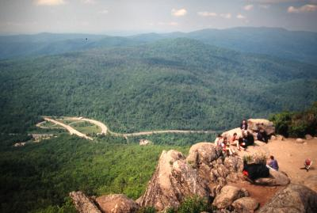

| Home | Kontakt | Steckbrief |
| Wandern/Trekking |
| Klettern/Klettersteige |
| Kanu |
| Fahrradtouren |
| Rucksack-Reisen |
| Touren mit Kindern |
| Wissenswertes |
| Werbung |
Trekkingtour auf dem Appalachian TrailDer Appalachian Trail ist ein 3440 Kilometer langer Wanderweg an der Ostküste der USA. Er beginnt im Süden am Springer Mountain im Bundesstaat Georgia und endet am Mount Katahdin in Maine. Die Richtung von Süden nach Norden ist auch die bevorzugte Richtung aller sogenannter Through Hiker, die den kompletten Weg gehen. Sie starten im Frühjahr in Georgia und beenden die Wanderung im Herbst in Maine.So viel Zeit hatten wir nicht. Während eines Urlaubes an der Ostküste und nach drei Tagen New York sind wir per Greyhound Bus nach Hagerstown, Maryland gefahren, wo wir bei einer befreundeten Familie übernachtet haben. 21.05.98: (15km)Brenda bringt uns zum Startpunkt unserer 5 tägigen Wanderung. Wir beschränken uns aus Zeitgründen auf einen Teil des Appalachian Trails, der durch den Shenandoah National Park verläuft. Als Startpunkt haben wir uns eine Stelle namens Swift Run Gap ausgesucht. Der liegt an einer Kreuzung der Straße Nr. 33 von Elkton kommend mit dem Skyline Drive. Dort befindet sich auch eine Ranger Station, wo wir unser benötigtes Permit bekommen. Nach kurzer Verabschiedung schlagen wir uns um 10:30 in den Wald.
Start am Swift Run Gap Der Trail orientiert sich am Skyline Drive. Dies ist eine kostenpflichtige Panoramastraße, die komplett durch den Nationalpark verläuft und so auch dem gehfaulen Durchschnittsamerikaner den Zugang zur Natur eröffnet. Außerdem ermöglicht sie zahlreiche Tagesausflüge und Rundtouren. An einigen Stellen hat man Sichtkontakt zur Straße oder muß sie überqueren aber ansonsten stört sie nicht. Nach 10 Kilometern kommen wir an der verschlossenen Pocosin Cabin vorbei. Hier machen wir eine erste Rast und plötzlich steht ein Hund vor uns. Er sieht eigentlich recht friedlich aus aber trotzdem trauen wir uns nicht an seiner Marke zu schauen, wem er gehört. Als wir wieder aufbrechen, begleitet er uns. Nach drei weiteren Kilometern passieren wir den Lewis Mountain Campingplatz. Wir melden den freilaufenden Hund, aber dort interessiert man sich nicht wirklich dafür. Der Campingplatz ist ziemlich voll (In den USA ist ein Campingplatz voll, wenn jeder Wohnmobilstellplatz inklusive Tisch und Bank belegt ist. Für europäische Verhältnisse ist dort noch reichlich Platz), so dass wir bis zur Bearfence Mountain Hut weitergehen. Die Hütte sieht gut aus und 15 Kilometer sind genug für heute. Den Hund haben wir seit dem Campingplatz auch nicht mehr gesehen. Im Nationalpark gibt es in regelmäßigen Abständen sogenannte Shelter, in denen man als Wanderer kostenlos übernachten kann. Diese Hütten sind auf einer Seite offen und bieten auf zwei Ebenen etwa 8 bis 10 Personen eine Unterkunft. Die Hütten befinden sich meist in der Nähe einer Quelle und haben auch eine Feuerstelle und eine Möglichkeit seine Lebensmittel hochzuhängen, damit sie für Bären und andere Tiere nicht erreichbar sind . An der Bearfence Hut Die Hütten machen einen guten Eindruck, allerdings muß man sich auch daran gewöhnen, dass unter der Schlaffläche die ganze Nacht Nagetiere umherstrolchen. Anscheinend nehmen es einige mit ihren Lebensmitteln nicht so genau und so haben sich die Tiere daran gewöhnt, dass an den Hütten immer etwas für sie abfällt. Eine der Quellen - Wir haben das Wasser vorsichtshalber noch einmal gefiltert 22.05.98: (19km)Von der Bearfence Hut verläuft der Trail über den Hazeltop, der mit 3812ft höchste Punkt im Shenandoah National Park, zum Campingplatz Big Meadows. Dort kommen wir nach 13 Kilometern an und machen erst einmal Mittagspause. Dann geht es weiter an den Franklin Cliffs vorbei bis zur Rock Spring Hut, wo wir nach insgesamt 19 Kilometern die Nacht verbringen.Komfortabler Rastplatz 23.05.98: (24km)Wir kommen um halb acht los und nach 7 Kilometern machen wir bei Skyland eine kurze Pause. Dort gibt es auch einen Kiosk. Eine Amerikanerin beneidet uns und würde auch gerne mal so etwas machen. Nachdem ich ihr mal testweise meinen Rucksack aufgeworfen habe, zieht sie allerdings eines Besseren belehrt davon. Sind wohl doch noch zu viele Lebensmittel drin. Wir nutzen die Gelegenheit, füllen unsere Wasserflaschen auf und besuchen auch mal wieder ein Porzellanklo.Nach weiteren 6 Kilometern kommen wir an der Pinnacle Picnic Area an. Als uns dort ein grillender Amerikaner sieht, lädt er uns sofort ein etwas mit zu essen und seine Kinder hören ganz gespannt zu und wollen wissen, wie es denn so ist mitten im Wald zu schlafen bei den vielen Bären. Bären? Wir haben noch keine gesehen. Ich weiß nicht, wie wir die bisher erlebten Ameisen, Raupen und Mäuse abenteuerlich beschreiben sollen. Wir bedanken uns für das Essen und gehen pappsatt weiter.

Marys Rock Wir steigen kurz vor Thornton Gap auf den 3514ft hohen Marys Rock. Dort ist es recht voll, denn bei Thornton Gap gibt es ein Panorama Restaurant und der Aufstieg ist wohl sehr beliebt. Wir steigen zum Parkplatz ab und nutzen die dortigen Toiletten um uns mal zu waschen. Man darf zwar stinken, muß es aber nicht. Nach weiteren 2.3 Kilometern erreichen wir nach insgesamt 24km die Pass Mountain Hut. Reicht für heute. Pass Mountain Hut kurz hinter Thornton Gap 24.05.98: (22km)Die Natur und die anderen Mitwanderer in der Hütte wecken uns mal wieder so früh, dass wir um kurz vor acht schon wieder unterwegs sind. Der Weg ist nicht sehr schwer. Kaum Steine und viel federnder Waldboden. Nach 11.5 Kilometern kommen wir zur Elkwallow Picnic Area. Dort haben wir nach all der Outdoorkost mal einen richtig feisten Burger verdrückt.Kurzer Kontakt mit der einheimischen Tierwelt Es fängt an zu regnen und die Temperatur geht runter. Wir sind um 16:30 die ersten an der Gravel Springs Hütte aber es wird doch noch voll. So voll, dass einige Wanderer sogar ihre Zelte aufstellen müssen. An den Hütten trifft man immer wieder alte Bekannte (die, die auch nach Norden gehen) und ein paar neue Leute (die, die nach Süden gehen oder eine Zweitagestour machen). In der Nacht stürmt und gewittert es. Ach so: 22 Tageskilometer. Langsam füllt sich die Gravel Springs Hut 25.05.98: (22km)Wir haben heute früh viel Zeit. Für 18 Uhr sind wir erst am vereinbarten Treffpunkt zum Abholen verabredet und heute liegen nur 22 Kilometer vor uns. Wir gehen also erst spät los. Allerdings ist es ziemlich warm und die Strecke auch nicht einfach. Viele kleine Anstiege. Nach 15 Kilometern verlassen wir den Shenandoah National Park und gehen weiter auf dem Appalachian Trail. An einer Hütte namens Tom Floyd Wayside machen wir Pause.Tom Floyd Wayside - kurz vorm Ziel Noch 5 Kilometer und wir erreichen um 17 Uhr die US 522. Dort sind wir verabredet. Brenda und Ralph sind schon da und bewundern unseren intensiven Körpergeruch. Mit eingeschalteter Lüftung fahren wir zurück nach Hagertown. Informationen:Dank der Shelter hätten wir kein Zelt mitnehmen brauchen. Der Weg ist gut markiert, so dass man außer Karten keine weiteren Informationen braucht. Wir hatten noch das "Appalachian Trail Guide to Shenandoah National Park" dabei, in dem wirklich jede Baumwurzel beschrieben ist. Das Buch ist aber verzichtbar. Außerdem hatten wir noch das "Appalachian Trail Data Book 1998" dabei. Darin ist der komplette Trail beschrieben. Nett aber für unser kurzes Stück auch verzichtbar. Wirklich gut waren die Karten und zwar kamen wir mit Map 9 und Map 10 vom Potomac Appalachian Trail Club aus. Die Karten sind imprägniert und haben einen Maßstab von 1:62500. Bekommen haben wir sie hier. Der Zustand des Weges ist hervorragend aber abwechselungsreich. Mal geht es über schmal Waldpfade, Netter Waldweg mal über steinige Wurzelwege. Über Stock und Stein Oft bieten sich schöne Fernblicke über die Landschaft. Auf dem Weg gibt es keinerlei Einkaufsmöglichkeiten. Man sollte also genug Lebensmittel dabei haben. Der nahe Skyline Drive stört nicht wirklich, bietet einem aber im Notfall eine Menge Sicherheit. Außerdem kommt es an den zahlreichen Rastplätzen dadurch zu interessanten Begegnungen. Es treffen teilweise zwei Welten aufeinander. Links:Offizielle Seite der Appalachian Trail Conservancy (ATC)Offizielle Seite des Shenandoah National Parkes. Viele Infos und Karten. Nationalparkinfos und Kartenausschnitte. Kartenmaterial Bill Brysons heitere Abenteuer auf dem Appalachian Trail - Picknick mit Bären |